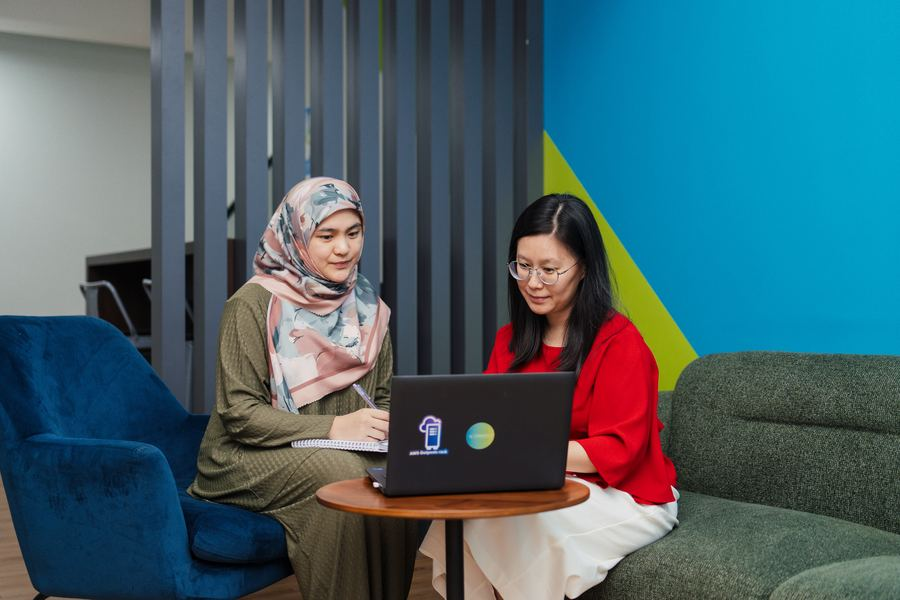
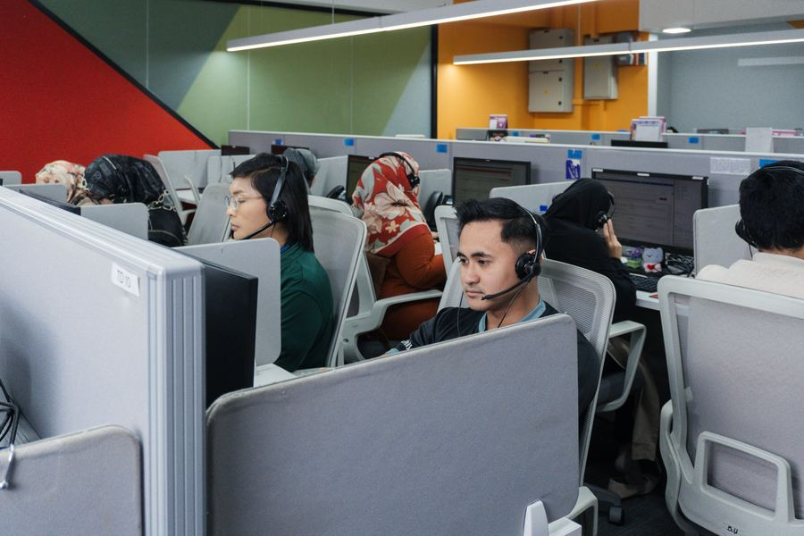

01
Accountability beyond adoption
Technology alone rarely delivers value. Lasting success comes from AI that's secure, trusted, and accountable from strategy through scale.
BCT builds, operates, and powers mission-critical digital infrastructure using proprietary platforms, deep domain expertise, and AI to engineer, modernize, and continuously improve enterprise operations.
Explore our productsMarket leaders aren't winning because they have access to better AI. They're winning because they've embedded it into the way their organizations operate.
Technology alone rarely delivers value. Lasting success comes from AI that's secure, trusted, and accountable from strategy through scale.
Repeatable execution, strong governance, and integration into core operations turn responsible AI into durable advantage, at scale.
Strategy, engineering, and operations across cloud, data, AI, and managed services.
AI-powered, scalable transformation across regulated, mission-critical industries.
Deep alliances with leading technology partners that unify your ecosystem.
BCT embeds AI into your Global Capability Center from day one. Powered by AigeniX™, our agentic AI platform automates the domains alongside — accelerating operations, agility, and time-to-market.
Handled end-to-end by agentic AI, with people looped in only where judgement is needed.
Streamlined into a continuous close, with accuracy checked on every run.
Captured and structured, so expertise never walks out the door.
We solve operational challenges. Each platform combines domain expertise with scalable architecture for cloud, data, and AI outcomes.
Asset availability and ROI, raised by data science.
Decision analytics and asset management for metro rail.
Governance, risk and compliance, streamlined end to end.
Automated, AI-powered audit for continuous compliance.
Agility, lower cost and continuous compliance, automated.
Faster, higher-quality delivery through governed AI.
Fuel retail operations automated with IoT, cloud and AI.
Fleet visibility through intelligent vehicle monitoring.
Supplier management with AI-driven insight and automation.
Operational transparency for oil, gas and energy firms.
Real-time feedback that drives experience improvements.
Seamless workflow and intelligent customer operations.
Founded in Oman in 1999, BCT serves global enterprises, including several Fortune 500 companies, through its Services, Products, and Platforms businesses.
27
Years
50
Countries
2.2k
Enterprise Clients

Full operational ownership of mission-critical infrastructure, higher uptime, faster resolution, and less load on your team.
Proprietary platforms accelerate deployment and deliver repeatable outcomes at scale, without growing headcount.
AI integrated directly into your infrastructure, predictive intelligence, automation, and real-time decisions.

Trusted where failure isn't an option, national payments, core banking, industrial operations, and government.
Engineering expertise and operational ownership drive faster execution and measurable outcomes, not workforce size.
See how BCT solves complex challenges and delivers business impact through disciplined execution and scalable solutions.
Intelligent, automated software delivery, enhancing agent efficiency and customer experience.
Harnessing AI and analytics to enhance citizen engagement and service reliability.
Cloud-native Temenos enabling scalable global transaction processing.
BCT is where engineers build systems that cannot fail, taking end-to-end ownership of solutions deployed across 50 countries.
Careers at BCT